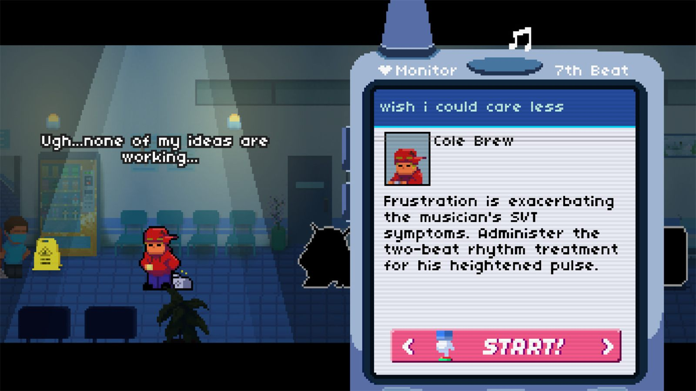
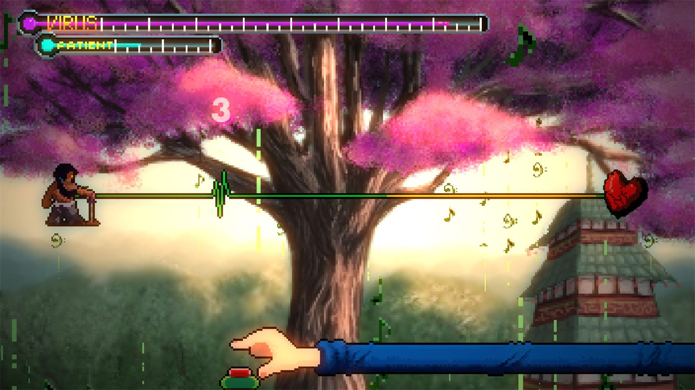

La mayor sorpresa que me he llevado jugando a un videojuego en lo que llevamos de año. Se trata de un juego de ritmo enormemente desafiante donde solo necesitas hacer uso de un botón, al más puro estilo Rhythm Paradise. Salió en 2021 en acceso anticipado y en diciembre de 2025 se lanzó la versión completa en Steam. Lo descubrí por casualidad mientras revisaba en Steam250 los juegos mejor valorados del año pasado, donde aparecía en el top 20. No tenía ni idea de su existencia, pero tras ver el tráiler decidí lanzarme de cabeza sin pensármelo dos veces.
La trama nos sitúa en un hospital que emplea un tratamiento innovador para curar a sus pacientes. La cura consiste en estabilizar los ritmos cardíacos a través de la música. Cada nivel presenta a un paciente diferente con una dolencia médica o emocional única. Lo bonito es que la música y el ritmo de los latidos reflejan directamente su estado mental, y la melodía nos hace descubrir el trasfondo de la persona. El método consiste, en términos generales, en apretar un botón en el séptimo pulso. Sí, tan sencillo como eso. Tal y como dicen ellos, es el juego más fácil que has jugado, porque al fin y al cabo solo hay un botón. Bueno, pues es el juego más difícil que he jugado en los últimos años.
Un botón y ninguna repetición
El juego es una absoluta genialidad. En lo personal, es el mejor juego de música y ritmo que he jugado jamás. Veremos una frecuencia cardíaca que tiene su origen en el paciente que estemos tratando y tendremos que contar hasta siete. Ahora bien, el juego introduce constantemente mecánicas nuevas para variar la jugabilidad de los niveles y evitar caer en la repetición, ya sean pulsos más cortos, pulsos donde hay que mantener la barra espaciadora, silencios o tiempos dobles. No hay dos niveles iguales, el juego continuamente te sorprende con algo nuevo. De lo más dinámico que he visto jamás.
Por si esto no fuera poco, el juego pone empeño en que cojas cariño a cada paciente. No hay ningún personaje de relleno. Conforme los vayas tratando irás conociendo su historia personal y cuál es la enfermedad que los tiene ingresados. Lo que me ha encantado es que al principio te introducen las historias de forma individual, pero luego vemos cómo se van entrelazando hasta formar un elenco de primera categoría que culmina en una épica sin igual. Aviso de que alguna lagrimita caerá seguro. Lo explica de manera genial Mollie Taylor en su análisis para PC Gamer, donde apunta que la determinación del estudio por que nadie se quede al margen hace que el elenco sea "increíblemente entrañable".

La dificultad y el turno de noche
La dificultad va escalando progresivamente. Al principio empiezas practicando con las mecánicas fundamentales y los primeros niveles son un pequeño trámite. Ahora bien, si al pasar del primer acto crees que ya dominas el juego, siento decirte que estás cometiendo una terrible equivocación. A medida que avanzas ya no solo se te introducen mecánicas más complejas, sino que tienes que combinar y poner en práctica todo lo aprendido hasta entonces. Al terminar el nivel sacas una calificación que va desde la S+, sin fallos, hasta la F, un auténtico desastre. Para pasar al siguiente nivel necesitas al menos una B, y creedme que hay niveles que te los vas a tener que trabajar mucho. Los niveles de jefe del tramo final los he tenido que repetir incontables veces. Eso sí, el juego tiene opciones de accesibilidad donde puedes cambiar la velocidad o ampliar el margen para captar la pulsación.
Tenemos el turno de día, que son algo así como las misiones de la historia, pero luego hay un turno de noche, que es una versión alternativa más difícil del nivel jugado durante el día. La gracia es que para acceder a él tienes que haber sacado al menos una A en su correspondiente nivel diurno. Y sacar una A es fallar un número de veces que se cuenta con los dedos de una mano. Sangre, sudor y lágrimas, amigos míos.

Un despiporre visual y una banda sonora sin desperdicio
Otra de las cosas que me ha sorprendido es el absoluto despiporre visual de algunos de sus niveles, especialmente en las fases de jefe. Una cantidad de efectos increíbles que van acompasados a la perfección con la excelente banda sonora. Algunos niveles incluso rompen la cuarta pared pasando el juego al modo ventana, donde veremos cómo se desplaza rápidamente por tu escritorio al ritmo de la música. Jamás había visto esto en un videojuego y aquí lo han ejecutado magistralmente.

En un juego musical como este son muy importantes las canciones que escoges para tus niveles. No os preocupéis, porque Rhythm Doctor no tiene canción mala. El juego destaca por tener una gran variedad de géneros, entre ellos techno, jazz, pop y electrónica, e incluso voces para muchas de sus canciones. Algunas tienen doble versión, en inglés y en chino. Qué pena que no estén en Spotify, me hubiera gustado poner muchas de ellas en mi lista de reproducción.

Y no es solo que suenen bien, sino que la música tiene un propósito. Por un lado consigue establecer una conexión profunda con la historia de los personajes a través de su leitmotiv, el tema musical recurrente asociado a cada uno. Por otro, cada canción está diseñada para enseñar teoría musical de forma sutil, obligando al jugador a adaptarse a compases irregulares, polirritmos y cambios de tempo a lo largo de todo el juego.
Rhythm Doctor cuenta además con un modo cooperativo a dos jugadores que no he podido probar, pero tiene buena pinta. También hay una sección de niveles extra con colaboraciones con otros juegos de ritmo como Muse Dash, y entre actos vamos desbloqueando algunos niveles que funcionan como minijuegos. Hay uno de levantar peso que es bastante curioso, porque ha quedado totalmente demostrado que no soy capaz de coordinar los dos hemisferios de mi cerebro. Se nota que no han querido hacer nada por rellenar, así que chapó.
Lo que menos me ha convencido
En los últimos niveles llega un momento en el que la dificultad consiste en ponerte cuatro compases en paralelo donde tienes que seguir el ritmo de cuatro personajes distintos de forma simultánea. Yo no sé qué persona medianamente humana es capaz de ejecutar eso a la perfección sin caer en la memorización. Y precisamente eso es lo que más me ha chirriado. Hay algunos niveles que siento que son pura prueba y error hasta que consigues ejecutarlos. Hay secciones en las que directamente es imposible acertar sin anticiparse. Debes saber lo que viene para poder darle bien, y para eso vas a tener que jugar el nivel muchísimas veces hasta memorizarlo como si fueran las tablas de multiplicar.

En conclusión, qué suerte he tenido de encontrarme con este juego por pura coincidencia. Me extraña haberlo pasado por alto, porque es uno de los juegos mejor valorados en Metacritic del año pasado. Creo que se debe a que salió en diciembre, en plenas fechas de los Game Awards, y debió de pasar muy por debajo del radar. Si te gusta la música y los juegos de ritmo, esto es imprescindible. Te diría incluso que si nunca has jugado a un juego de ritmo más allá del Guitar Hero y no sabes si es tu rollo, le des una oportunidad, porque de verdad que no tiene desperdicio.
Lo mejor
- Una banda sonora sin una sola canción mala y con propósito narrativo.
- No hay dos niveles iguales, introduce mecánicas nuevas sin parar.
- El apartado visual de las fases de jefe y los niveles que rompen la cuarta pared.
- Todos los pacientes tienen historia propia y el elenco acaba siendo entrañable.
Lo peor
- El tramo final depende demasiado de la memorización pura.
- Los niveles con cuatro compases en paralelo rozan lo inhumano.
- La banda sonora no está disponible en plataformas de música.
Desglose de puntuación
Veredicto
El mejor juego de ritmo que he jugado jamás. Un solo botón, ninguna canción mala y una dificultad brutal que solo se le va de las manos en el tramo final.